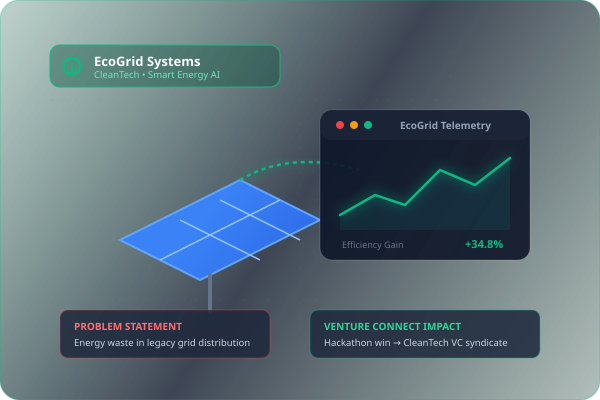

VENTURE CONNECT
From Idea to Investment.Empowering startup founders with opportunities, resources, mentorship, and investor connections to transform innovative ideas into successful ventures.
500+
Startup Ideas Mapped
120+
Angel & VC Networks
45+
Hackathons & Cohorts

What is Venture Connect?
A unified digital ecosystem bridging the structural divide between nascent ideas and catalytic capital.
Venture Connect is a centralized startup ecosystem platform that connects aspiring entrepreneurs, startup founders, investors, venture capital firms, incubators, accelerators, colleges, and startup communities.
It simplifies the startup journey by bringing important startup-related opportunities into one unified, collaborative ecosystem.
The Core Startup Problems We Address
Navigating the early-stage landscape is historically fragmented, opaque, and inefficient.
Investor Discovery Gap
Founders struggle to identify and access suitable angel investors and venture capital firms aligned with their stage and domain.
Lack of Idea Visibility
Promising startup concepts and university prototypes remain unnoticed due to lack of a credible public showcase platform.
Fragmented Opportunities
Funding programs, government grants, and incubator applications are scattered across isolated websites and social channels.
Inaccessible Competitions
Students, researchers, and budding innovators struggle to discover hackathons, innovation challenges, and student venture competitions.
Mentorship Void
Early-stage founders need continuous expert feedback and technical mentorship to refine their business models and product architectures.
Inefficient Investor Deal Flow
Investors spend substantial time sifting through unqualified inquiries to find verified, high-potential early-stage opportunities.
Why Venture Connect?
Engineered to empower every participant in the entrepreneurial lifecycle through clarity, structure, and direct access.
Bridge the Founder–Investor Gap
Establish direct communication channels and mutual discovery protocols between visionary entrepreneurs and accredited investors.
Capital AlignmentProvide Startup Idea Visibility
Offer founders a structured public showcase to articulate problem statements, validate business models, and attract stakeholders.
Brand & Deal FlowCentralize Funding Discovery
Aggregate grants, equity programs, angel pools, and institutional cohorts into one searchable, real-time opportunities database.
Opportunity IndexFoster Student Entrepreneurship
Empower college researchers, student clubs, and young innovators with pathways to launch real-world ventures from academic work.
Talent PipelineConnect Hackathons & Accelerators
Provide direct links to competitions, innovation sprints, and incubation mentors to rapidly advance prototypes to MVP maturity.
Fast ExecutionClarify Investment Readiness
Equip founders with diagnostic assessment criteria covering market sizing, traction metrics, team balance, and financial fundamentals.
Readiness BenchmarkBuild Collaborative Synergy
Cultivate an open, supportive ecosystem where knowledge sharing, peer critique, and institutional partnerships drive collective growth.
Network EffectsHow Does It Work?
A seamless, structured 6-step lifecycle transforming raw concepts into funded, scalable enterprises.
Join the Ecosystem Onboarding
Founders and investors create their profiles and become part of the Venture Connect ecosystem, establishing their industry focus, investment criteria, and collaborative intent.
Showcase Startup Ideas Presentation
Founders introduce their startup ideas, explain their business models, identify critical problem statements, present proposed technical solutions, and link prototypes or pitch decks.
Discover Opportunities Exploration
Founders explore hackathons, startup competitions, funding opportunities, incubation programs, and accelerator cohorts tailored to their sector and stage of development.
Connect with Investors Deal Discovery
Investors discover startups, explore their detailed profiles, review applications, and identify promising high-conviction opportunities aligned with their investment thesis.
Application and Evaluation Due Diligence
Founders submit structured applications for cohorts and funding, while investors, mentors, and program managers review credentials and evaluate startup potential transparently.
Growth and Development Scaling
Through verified connections, specialized mentorship, capital infusions, and accelerator resources, founders advance their startups toward sustainable implementation and revenue growth.
One Platform. Multiple Opportunities.
Connecting every vital participant in modern entrepreneurship into a collaborative, mutually reinforcing network.
1. Startup Founders
People with innovative ideas who want to develop startups, find investors, discover opportunities, and grow their businesses into sustainable market leaders.
- Publish startup concepts & implementation roadmaps
- Apply directly to cohorts, hackathons & angel syndicates
- Benchmark VC investment preparedness
2. Investors & Venture Capital
Individuals, angel syndicates, and venture capital firms interested in discovering promising early-stage startups and supporting rapid business growth.
- Curated deal flow filtered by sector & traction
- Standardized application dossiers for rapid evaluation
- Direct communication channels with validated founders
3. Incubators & Accelerators
Organizations that nurture startups through hands-on mentorship, specialized guidance, business development, co-working, and structured growth programs.
- Publish cohort applications and intake schedules
- Manage mentor assignments and milestone tracking
- Host demo days and facilitate syndicate partnerships
4. Colleges & Universities
Educational institutions and research laboratories that encourage student entrepreneurship, technological innovation, and startup participation.
- Connect campus Entrepreneurship Cells (E-Cells)
- Translate academic patents into commercial startups
- Offer students real-world hackathon challenges
5. Startup Communities
Grassroots communities, innovation hubs, and tech associations that organize startup meetups, innovation challenges, and entrepreneurship programs.
- Broaden reach for community hackathons & events
- Share peer playbooks, articles, and founder advice
- Foster regional and international founder solidarity
Explore the Venture Connect Ecosystem
An integrated suite of 8 modular components driving transparency, evaluation, and seamless opportunity matching.
1. Ideas & Implementation
A space where founders showcase their startup ideas, explain their implementation plans, articulate technical architecture, and track development progress.
2. Hackathons Hub
A centralized opportunity hub where founders and students discover hackathons, startup competitions, innovation challenges, and accelerator opportunities.
3. Opportunities Hub
A place where founders discover funding opportunities, grant programs, angel investment rounds, and institutional startup development cohorts.
4. Applications Management
A centralized system for submitting and tracking applications for investors, hackathons, startup competitions, and incubation programs with live status indicators.
5. Investor Connections
Helps founders discover verified investors aligned with their sector and ticket size, while allowing investors to explore promising startups with clean metrics.
6. VC Readiness
A conceptual AI-assisted assessment module helping founders evaluate business models, market potential, product traction, team capability, and financial preparation.
7. Messaging & Notifications
Explains how founders, investors, and organizations communicate in real-time and receive important deadline, interview, and application milestone updates.
8. Founder Community
A knowledge-sharing environment where founders share hard-won experiences, publish startup articles, dissect post-mortems, and exchange insights.
Built for the Entire Startup Ecosystem
Delivering distinct, high-impact value to each participant in the venture landscape.
Accelerating Startup Founders
From initial concept validation to closed venture rounds.
- Startup Visibility: Present ideas to a qualified network of mentors, institutions, and capital providers.
- Investor Discovery: Filter angels and institutional VC syndicates aligned with your sector and ticket size.
- Funding Opportunities: Direct access to equity rounds, non-dilutive government grants, and angel networks.
- Hackathons & Competitions: Rapid prototype testing grounds to earn non-dilutive prize capital and recognition.
- Incubation & Mentorship: Structured cohorts providing technical guidance, go-to-market strategies, and legal advisory.
- Startup Development Guidance: Milestone planning tools to transition smoothly from proof-of-concept to paying customers.
Empowering Investors & Venture Capital
Streamlined deal sourcing and verified founder evaluation.
- Discover Innovative Startups: High-signal deal flow categorized by industry domain, traction, and maturity.
- Explore Startup Profiles: Standardized dossiers detailing technical stacks, TAM, business models, and cap tables.
- Review Applications: Centralized workflow to request pitch decks, conduct async diligence, and schedule founder calls.
- Identify Investment Opportunities: Spot high-conviction startups early through hackathon win records and verified progress.
- Connect with Emerging Entrepreneurs: Direct intro protocols with minimal noise and maximum strategic fit.
Supporting Incubators & Organizations
Amplifying program reach and cohort governance.
- Publish Startup Programs: Broadcast acceleration cohorts, incubation slots, and mentorship clinics to thousands.
- Organize Innovation Challenges: Host domain-specific hackathons with custom scoring rubrics and sponsor portals.
- Discover Talented Founders: Scout emerging entrepreneurial talent and deep-tech prototypes before public visibility.
- Manage Startup Applications: Review, filter, shortlist, and track cohort applicant pipelines in one dashboard.
- Support Regional Entrepreneurship: Build enduring partnerships with academic institutions, investors, and local industries.
Inspiring Students & Aspiring Founders
Transforming academic passion into commercial reality.
- Discover Entrepreneurship Opportunities: Learn how to commercialize university capstone projects and research work.
- Participate in Hackathons: Collaborate with multidisciplinary peers on real-world industrial and sustainability problems.
- Develop Innovative Ideas: Obtain early diagnostic feedback on market size, tech feasibility, and monetization models.
- Connect with Startup Communities: Meet experienced co-founders, alumni angel investors, and seasoned technical mentors.
A Startup Journey with Venture Connect
Follow how a hypothetical CleanTech startup moves step-by-step through the Venture Connect ecosystem.
Startup: EcoGrid
Smart Energy Intelligence Platform
EcoGrid is a modern CleanTech initiative designed to eliminate commercial energy waste through intelligent IoT telemetry and predictive consumption analytics.
Problem Identified
Traditional energy monitoring creates challenges for efficient resource management, leading to significant electrical waste, blind consumption spikes, and excessive utility costs for commercial buildings.
Proposed Solution
EcoGrid proposes a smart IoT-driven energy monitoring solution combining real-time edge telemetry with AI predictive analytics to reduce institutional power consumption by over 30%.

The 8-Step EcoGrid Trajectory on Venture Connect
Witness how each stage of the Venture Connect workflow directly benefited EcoGrid.
Idea Introduction
The founder creates a Venture Connect profile and introduces the EcoGrid startup concept, outlining the core vision and value proposition.
Implementation Plan
Founder showcases the technical architecture, hardware sensor schematics, pilot test milestones, and software roadmap on the platform.
Hackathon Discovery
Through the Hackathons Hub, the team discovers the National CleanTech & Smart Energy Innovation Challenge and signs up immediately.
Innovation Program Application
EcoGrid submits a standardized application dossier for an affiliated green technology incubation program and prototype grant.
Investor Discovery
A sustainability-focused venture fund discovers EcoGrid’s validated hackathon finalist badge and profile on the Opportunities Hub.
Concept & Diligence Review
The investor reviews EcoGrid's business concept, VC readiness scorecard, and financial projections directly through the secure module.
Connection Established
Founder and investor initiate encrypted messaging, leading to pitch meetings and formal term sheet negotiations.
Accelerated Growth
With seed capital secured and mentor connections established, EcoGrid scales hardware production and explores national pilot programs.
Building a Connected Startup Future
Democratizing access to capital, mentorship, and opportunity for the innovators of tomorrow.
Strategic Future Horizons
Key pillars anchoring the continuous evolution of Venture Connect.
Encourage Innovation
Inspire creative problem solving across deep tech, climate, healthcare, and education by spotlighting daring breakthroughs.
Support Entrepreneurship
Eliminate early logistical barriers for first-time founders, underrepresented builders, and university innovators.
Improve Startup Visibility
Ensure that merit and technical depth, rather than geographic privilege or insider networks, determine founder discovery.
Strengthen Founder–Investor Ties
Fostering transparent, high-trust relationships powered by verified milestone progress and mutual value alignment.
Expand Opportunity Access
Democratize access to hackathons, institutional grants, and global mentorship cohorts regardless of geographic boundaries.
Collaborative Ecosystem Network
Build an enduring innovation infrastructure uniting industry, academia, and venture capital for shared economic prosperity.
Let's Connect and Build Something Innovative.
Have questions about the Venture Connect platform architecture, showcase presentation, or partnership opportunities?
Connect with the Venture Connect Team
We welcome inquiries from academic evaluators, founders, prospective angel investors, incubator directors, and campus E-Cells.
php/contact.php and stored in MySQL using prepared statements.